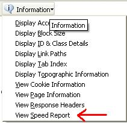
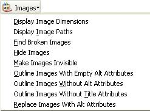
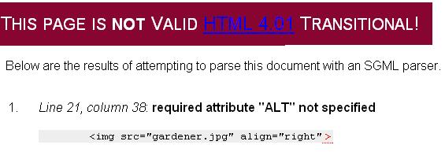

Information Research, Vol. 10 No. 2, January, 2005


Information Research, Vol. 10 No. 2, January, 2005 | ||||
|
|
|||
The Web writer's problem: Your Webpage is bloated and slow to load, your JavaScript is buggy, your floated images are out of control, etc.
The Web reader's problem: You download a Webpage and wish you could view it without the images, show all the link code, examine its stylesheet, etc.
Solution: The extensions for the new Mozilla Firefox Web browser can help both Web writers and readers.
I have extended my version of Firefox to arm myself with these tools: "Disable" to "Options" are Web Developer tools, is the Standards Compliance mode, and is the JavaScript Console.
Welcome back to the browser wars! I just switched to Mozilla Firefox. The Firefox Web browser exemplifies the advantage of open-source development where many different people can contribute many different extensions to satisfy many different needs. My needs as a Web writer are being met by the Web Developer extension written by Chris Pederick, and the JavaScript Console Status written by Michael O'Rourke.
I can decode my buggy JavaScript Javascript is one of the most common client-side Web technologies. It is fundamental to the development of interactive Web pages. Image roll-overs, clickable buttons and form entry validation are common applications. You can even make things fly across your Webpage or build image billboards for the timed display of pictures. But if you're writing Javascript for a Webpage, then your development environment is your Web browser, and debugging JavaScript is often black magic (on a good day) or impossible (on a bad day):
While exploring JavaScript, you'll probably write code that doesn't work as you expect it to and want to debug it. The basic debugging technique for JavaScript is like that in many other languages: insert statements into your code to print out the values of relevant variables so that you can try to figure out what is actually happening. David Flanagan, JavaScript: The Definitive Guide O'Reilly, 2002 p.19
Ouch! I have been frustrated for years with cryptic error messages:
The JavaScript Console Status tool gives you more detailed and visual diagnostics, not only telling you what the problem is but also showing you where the error occurred. This is really helpful when you're debugging a JavaScript hundreds of lines long. You know that you have a JavaScript error, when the icon
turns to


I can evaluate the download speed of my Webpage
More and more I find myself teaching distance education courses via the Web. While I enjoy high-speed cable connections, some of my students no doubt would be thankful for a 56k modem, while others are hobbled with even less powerful technology. I can run a diagnostic on my Web page to optimize download. Consider the work of art that I wrote at http:// www.ischool.washington.edu/ tabrooks/ 320/ 2003Revision/ syllabus.htm.
The following Speed Report diagnostic tells me I've created a fat page that will be slow to load:

You want to harvest images from a Webpage? "Display Image Paths" will show you where an image is located. "Hide Images" will produce a text-only display. There are several tools to outline images. This is very useful for understanding how much of the Webpage presentation is image or text.

I'm a good example of a sloppy hacker who writes undisciplined HTML code. That's ok if I never work for hire or otherwise have to share my code. Your employer, however, might demand HTML of a certain reliability and standard. You can validate CSS, HTML, Links and more.
The Firefox browser is a customizable tool with new extensions being added all the time. It illustrates the evolution of the Web browser towards a toolbox that the Web surfer can use to negotiate the interactive reading surfaces known as Webpages. By the way, this Web page received warnings for too many objects, too many images, total size, total image size, total CSS size and I'm warned that it will load in about 55 seconds on a 56k modem. Ouch!
Contents |
|
Home |